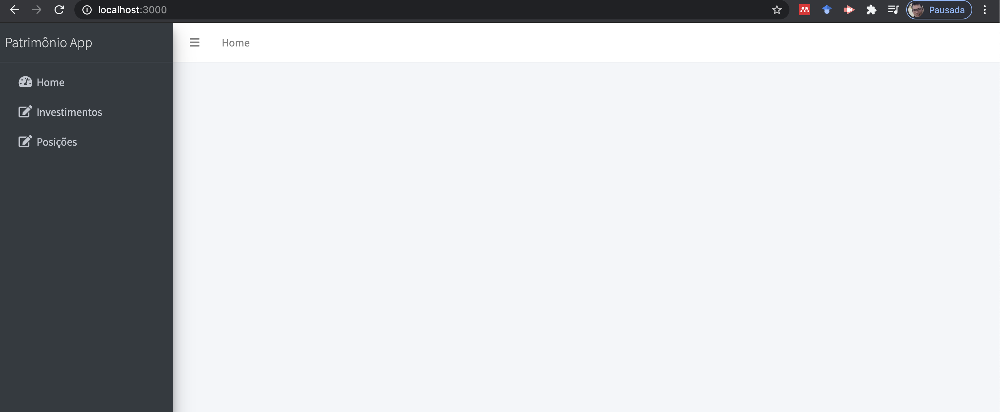

name: inverse class: center, middle, main-title # Componentizando a interface Laboratório de Programação --- # Objetivo - Portar o protótipo para React - Encontrar e contruir componentes > Tendo como regra a reusabilidade --- #Instalar dependências - Criar o projeto: `create-react-app <nome>` - AdminLTE: `npm install admin-lte --save` - Chart.js: `npm install --save react-chartjs-2 chart.js` - Provável que seja necessário o jQuery --- # Remova do projeto arquivos desnecessários - App.css - Index.css - Logo - ... --- # Adicione no App.js - Ele funciona como nossa base - Dependências comuns às páginas ```jsx import 'admin-lte/dist/css/adminlte.min.css' import 'admin-lte/plugins/fontawesome-free/css/all.min.css' ``` --- ## Vamos começar pela Home <center> <img src="home.png" width="800"> </center> --- ##Home: dê uma olhada no HTML - crie um componente `home.js` no projeto, dentro da pasta `src/views` - inicialize a configuração do componente ```jsx import React from 'react' class Home extends React.Component { render() { return ( <div> </div> ) } } export default Home ``` --- ##Home: sinalize a App.js - Importe o componente em App.js para que possa ser renderizado ```jsx import React from 'react'; import 'admin-lte/dist/css/adminlte.min.css' import 'admin-lte/plugins/fontawesome-free/css/all.min.css' import Home from './views/home' class App extends React.Component { render() { return ( <Home/> ); } } export default App; ``` --- ##Home: Copie o html e vá `componentizando` - Legal indentificar componentes como: - navbar - sidebar - content header - content - Você poderia colocá-los numa pasta `components` > <a href="http://nca.ufma.br/~geraldo/labprog/aulas/prototipo_/home.html">clique para dar uma olhada no html da Home </a> --- ##Home: Navbar ```jsx import React from 'react' function Navbar() { return ( <nav className="main-header navbar navbar-expand navbar-white navbar-light"> <ul className="navbar-nav"> <li className="nav-item"> <a className="nav-link" data-widget="pushmenu" href="#" role="button"> <i className="fas fa-bars"></i></a> </li> <li className="nav-item d-none d-sm-inline-block"> <a href="#" className="nav-link">Home</a> </li> </ul> </nav> ) } export default Navbar ``` --- ##Home: Sidebar ```jsx import React from 'react' function Sidebar() { return ( <aside className="main-sidebar sidebar-dark-primary elevation-4"> <a href="#" className="brand-link"> <span className="brand-text font-weight-light"> Patrimônio App </span> </a> <div className="sidebar"> <nav className="mt-2"> <ul className="nav nav-pills nav-sidebar flex-column" data-widget="treeview" role="menu" data-accordion="false"> <li className="nav-item has-treeview"> <a href="home.html" className="nav-link"> <i className="nav-icon fas fa-tachometer-alt"></i> <p>Home</p> </a> </li> ``` --- ##Home: Sidebar ```jsx <li className="nav-item has-treeview"> <a href="investimento.html" className="nav-link"> <i className="nav-icon fas fa-edit"></i> <p>Investimentos</p> </a> </li> <li className="nav-item has-treeview"> <a href="posicao.html" className="nav-link"> <i className="nav-icon fas fa-edit"></i> <p>Posições</p> </a> </li> </ul> </nav> </div> </aside> ) } export default Sidebar ``` --- ##Sobre os compontentes acima - Não estão recebendo parâmetros, mas poderiam. - Vamos ver o exermplo da Section Header ```jsx import React from 'react' function sectionHeader(props) { return ( /*Content Header (Page header)*/ <section className="content-header"> <div className="container-fluid"> <div className="row mb-2"> <div className="col-sm-6"> <h1>{props.title}</h1> </div> </div> </div> </section> ) } export default sectionHeader ``` --- ##Sobre a section header - Também funcional - Recebe como parâmetro `props` - Assim você pode ao usar o componente passar informação de configuração --- ##Outro componente do home, como `Class` ```jsx import React from 'react' class sectionContent extends React.Component { render () { return ( <section className="content"> <div className="container-fluid"> <div className="row"> <div className="col-12"> /* Default box */ <div className="card"> <div className="card-header"> <h3 className="card-title">{this.props.title}</h3> </div> {this.props.children} </div> </div> </div> </div> </section> ) } } export default sectionContent ``` --- ##Sobre Section Content - Também recebe props, mas .. - por ser classe, o props é referenciado por `this.props` - `this.props.title` obtém o título passado - `this.props.children` obtém todo o código que está dentro do componente --- ##Voltando ao `HOME` - Importe as dependências ```jsx import React from 'react' import Navbar from '../components/navbar' import Sidebar from '../components/sidebar' import sectionContent from '../components/sectionContent' import sectionHeader from '../components/sectionHeader' class Home extends React.Component { ``` --- ##Home: usando os componentes ```jsx render() { return ( <div className="hold-transition sidebar-mini layout-fixed"> <div className="wrapper"> <Navbar /> <Sidebar /> <div className="content-wrapper"> /*atenção na próxima linha onde é passado o parâmetro*/ <sectionHeader title="Inestimentos"/> ``` --- ##Home: mais 1 ```jsx <sectionContent> <div className="card-body"> </div> </sectionContent> ``` --- ##Home: o início junto ```jsx import React from 'react' import Navbar from '../components/navbar' import Sidebar from '../components/sidebar' import sectionContent from '../components/sectionContent' import sectionHeader from '../components/sectionHeader' class Home extends React.Component { render() { return ( <div className="hold-transition sidebar-mini layout-fixed"> <div className="wrapper"> <Navbar /> <Sidebar /> <div className="content-wrapper"> <sectionHeader title="Inestimentos"/> <sectionContent> <div className="card-body"> </div> </sectionContent> </div> </div> </div> ) } } export default Home ``` --- ##Home: view <center>  </center> --- ##Home: adicionando os outros elementos - Siga da mesma maneira adicionando os demais elementos do protótipo - Atenção: - troque `class` por `className` - troque `onclick` por `onClick` - troque `style="font-size: 20px"` por `style={ {fontSize : '20px' } }` --- ##Home: Gráfico ```jsx import React from 'react' import {Line} from 'react-chartjs-2' class HomeChart extends React.Component{ state = { ``` --- ##Home: Gráfico ```jsx state = { data : { labels : ['Janeiro', 'Fevereiro', 'Março', 'Abril', 'Maio', 'Junho', 'Julho'], datasets: [ { label : 'Digital Goods', backgroundColor : 'rgba(60,141,188,0.9)', borderColor : 'rgba(60,141,188,0.8)', pointRadius : false, pointColor : '#3b8bba', pointStrokeColor : 'rgba(60,141,188,1)', pointHighlightFill : '#fff', pointHighlightStroke: 'rgba(60,141,188,1)', data : [28, 48, 40, 19, 86, 27, 90] }, { label : 'Electronics', backgroundColor : 'rgba(210, 214, 222, 1)', borderColor : 'rgba(210, 214, 222, 1)', pointRadius : false, pointColor : 'rgba(210, 214, 222, 1)', pointStrokeColor : '#c1c7d1', pointHighlightFill : '#fff', pointHighlightStroke: 'rgba(220,220,220,1)', data : [65, 59, 80, 81, 56, 55, 40] }, ] } } ``` --- ##Home: Gráfico ```jsx render () { return ( <div className="chart"> <Line data={this.state.data} height='90px' /> </div> ) } } export default HomeChart ``` --- name: inverse class: center, middle, main-title # ok, faça para os demais!